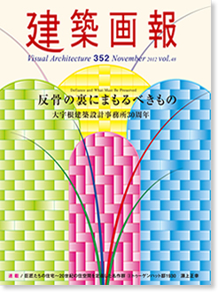
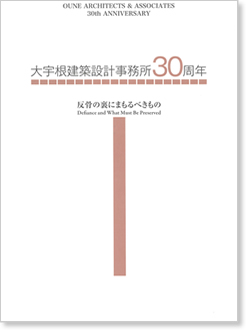

|

|
反骨の裏にまもるべきもの
Defiance and What Must Be Preserved
大宇根建築設計事務所30周年
大宇根弘司は、前川國男建築設計事務から独立し大宇根建築設計事務所を設立した。本特集号では、大宇根建築設計事務所30周年を記念して、美術館、文学館、博物館をはじめ、小学校、中学校など、レンガや天然の木材など素材にこだわった代表的作品56点を紹介する。
Visual Architecture 352 Nov. 2012 Vol.48
建築画報352号
2012年11月27日発刊
本文136ページ
仕様 A4変形判
定価 3,300円（税込）
ISBN978-4-901772-68-6
|
|
|
|

|
大宇根建築設計事務所30周年
Defiance and What Must Be Preserved
大宇根建築設計事務所30周年
Visual Architecture 352 Nov. 2012 Vol.48
建築画報352号 別装版
2012年11月27日発刊
本文136ページ
仕様 A4変形判
定価 4,620円（税込）
ISBN978-4-901772-70-9
|
|
|
|
建築画報 Vol.352 目次
002 ［対談］檀ふみ×大宇根弘司
「レンガは問いかけであり、答えである」
Dialog Fumi Dan and Hiroshi Oune
“Brick is Both the Question and the Answer”
010-017 山梨県芸術の森公園
Yamanashi Arts Park
010 山梨県立文学館
Yamanashi Prefectural Museum of Literature
014 山梨県立美術館南館
Yamanashi Prefectural Museum of Art (South Wing)
016 山梨県芸術の森公園全体図
Overall View of Yamanashi Arts Park
018 町田市立国際版画美術館
Machida City Museum of Graphic Arts
022 宮城県美術館・佐藤忠良記念館
The Miyagi Museum of Art-The Churyo Sato Gallery
026-031 山中湖文学の森公園
Yamanakako Literary Forest Park
026 徳富蘇峰館
Tokutomi Soho Museum
028 三島由紀夫文学館
Mishima Yukio Literary Museum
030 山中湖情報創造館
The Yamanakako Library for People’s Creativity
031 山中湖文学の森公園全体図
Overall View of Yamanakako Literary Forest Park
032 山梨県立産業展示交流館 アイメッセ山梨
Exhibition Hall Aimesse Yamanashi
036 富士川町ますほ文化ホール
Fujikawa-cho Masuho Bunka Hall
040 町田市民文学館「ことばらんど」
Literary House of Machida City People Word RANDO
042 藤枝市立郷土博物館
Fujieda City Museum of Local History
藤枝市立文学館
Fujieda City Museum of Literature
044 東京都夢の島熱帯植物館
Yumenoshima Tropical Plant Dome
048 マリンパル女川
「女川水産観光センター」「女川町水産物流通センター」
Marine Pal Onagawa
“Onagawa Fishery Tourist Center ”“Onagawa-cho Fish Distribution Center ”
050 大崎生涯学習センター「パレットおおさき」
Osaki Life-long Leaming Center “Palette Osaki”
052 町田市青少年施設「ひなた村」
Machida City Youth Center Sunny Place Village
054 東京エレクトロン軽井沢クラブ
Tokyo Electoron Karuizawa Club
058 山中湖平野温泉「石割の湯」
“Ishiwari-no-yu”, Hirano Supa on Lake Yamanaka
060 「写真と建築と大宇根弘司」増田彰久
“Photography, Architecture, and Hiroshi Oune”
Akihisa Masuda
064 相模原市立富士見小学校
Sagamihara Municipal Fujimi Elementary School
066 韮崎市立韮崎小学校
Nirasaki Municipal Nirasaki Elementary School
068 韮崎市立韮崎西中学校
Nirasaki Municipal Nirasaki Nishi Junior High School
072 見附市立今町小学校
Mitsuke Municipal Imamachi Elementary School
076 横須賀市立諏訪小学校
Yokosuka Municipal Suwa Elementary School
078 三条市立裏館小学校
Sanjo Municipal Uradate Elementary School
082 学校法人 榎本学園
町田福祉保育専門学校／町田調理師専門学校／町田美容専門学校／
町田製菓専門学校
Enomoto Academy
Machida College of Child & Social Welfare / Machida College of Culinary Art /
Machida College of Beauty / Machida College of Confectionery
084 高ヶ坂ふたば保育園
Kogasaka Futaba Nursery School
085 月坂保育園
Tsukisaka Nursery School
086 町田市子どもセンターぱお
Machida City Children Center PAO
087 特別養護老人ホーム コモンズ
Commons (special care home for the elderly)
088 コア 西日本e-R&Dセンター
CORE Nishi-Nihon e-R and D Center
089 ヒューテックQCインライン研究所
Huteck QC Inline Laboratory
090 淡路町MHビル
Awaji-cho MH Building
091 日総研ビル
Nissoken Building
092 フジタ製薬 東京工場事務所棟
Fujita Pharmaceutical, Tokyo Factory Office Building
093 フタバ青山ビル
Futaba Aoyama Building
094 町田市医師会館
Machida City Medical Association
095 品川医院診療所
Shinagawa Clinic
096 富士野屋別館「夕亭」
Fujinoya Bekkan Hotel “Yu-tei”
097 日本料理「さ蔵」
“Sakura” Japanese Restaurant
098 グランフィ－ルズカントリ－クラブ
Grand Fields Country Club
099 勝草橋意匠設計
Planning for the Kachikusa Bridge Design
100 茶室「崇松庵」（加藤邸内）
“Susho-an” (Kato House)
101 茶室「一二三庵」（志村邸内）
“Hi Fu Mi-an”(Shimura House)
102 寺田別邸
Terada Villa in Karuizawa
103 中林アトリエ
Nakabayashi Studio
104 小髙邸（つくし野）
Kodaka House
105 稲川邸
Inagawa House
106 川合邸
Kawai House
107 榎本邸
Enomoto House
108 榊原邸
Sakakibara House
109 小松邸
Komatsu House
110 中林邸
Nakabayashi House
111 大沢邸
Osawa House
112 大沢忠邸
Tadashi Osawa House
113 遠藤邸
Endo House
114 重信邸
Shigenobu House
New Project
115 テル箱根クラブ（東京エレクトロン）
TEL Hakone Club (Tokyo Electron)
（仮称）小野路宿通り観光交流センター
(Tentative name) Onoji-shukudori Tourism and Exchange Center
（仮称）麻布子ども中高生プラザ等複合施設
(Tentative name) Azabu Children’s Junior High and High School Plaza Compound Facility
116 「課題山積」大宇根弘司
“A Mountain of Challenge”
Hiroshi Oune
124 作品年譜
Project History
126 建築概要
Building Profile Data
134 会社概要
Company Profile
138 巨匠たちの住宅
～20世紀の住空間を定義した名作群
❹ノーマン・フィッシャー邸 1967 淵上正幸
142 information